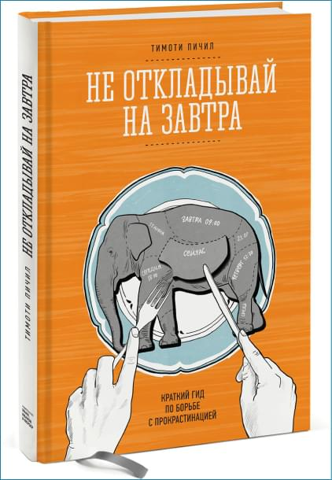

1. «Как привести дела в порядок. Искусство продуктивности без стресса», Дэвид Аллен
Одна из самых известных в мире книг по тайм-менеджменту и личной эффективности, переведённая на 30 языков. Её автор — Дэвид Аллен, консультант по вопросам продуктивности, который обязан своей популярностью придуманной им методике Getting Things Done. Она и излагается в этой книге.

2. «Не откладывай на завтра», Тимоти Пичил
На страдания о том, почему мы не приступаем к актуальным задачам, тратится так много энергии, что с лихвой хватило бы на их выполнение. Тем более что аппетит приходит во время еды, а работа затягивает. Тогда как мысли о том, как вам не хочется её делать, только тратят ресурсы и приносят неприятные эмоции. Главное, за дело потом всё равно придётся браться — только уже измученным и в условиях дефицита времени.